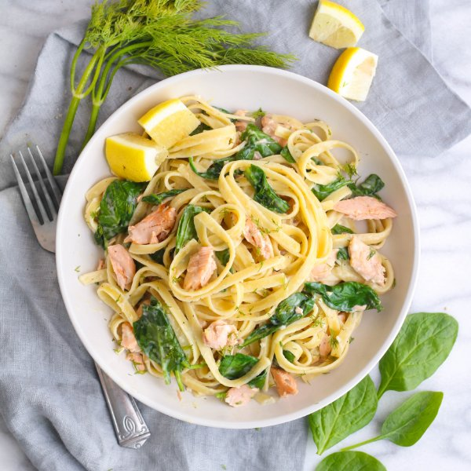

Salmon Fettuccine Alfredo with Spinach, Lemon & Dill

Prep Time
40 min
Nutrition (per serving)
696.1 kcalCalories
53.8 gProtein
63.7 gCarbs
24.3 gFat
Full nutrition table
| Calories | 696.1 kcal |
| Total fat | 24.3 g |
| Saturated fat | 10.3 g |
| Trans fat | 0.5 g |
| Cholesterol | 110.3 mg |
| Sodium | 162.6 mg |
| Carbohydrates | 63.7 g |
| Fiber | 3.5 g |
| Sugars | 5.9 g |
| Protein | 53.8 g |
| Potassium | 1299.2 mg |
| Calcium | 209.1 mg |
| Iron | 3.8 mg |
| Vitamin A | 930.9 IU |
| Vitamin C | 23.2 mg |
| Vitamin D | 652.9 IU |
Cookware
Ingredients
- 1 (5 oz) pkgbaby spinach
- 8 fl ozchicken or vegetable broth
- 10 ozfettuccine pasta
- 1 small bunchfresh dill
- 4 clovesgarlic
- 1lemon
- 1 ozParmesan cheese
- 1 ½ lbsalmon fillet
- 8 fl ozwhole milk
- all-purpose flour
- black pepper
- butter, unsalted
- salt
Steps
- Fill a large pot (for the pasta) about halfway with water; cover and bring to a boil.
- Wash and dry the fresh produce. (Skip the spinach if it came pre-washed.)1 (5 oz) pkg baby spinach
1 small bunch fresh dill
1 lemon - Preheat a sauté pan over medium heat.
- While the pan warms up, place the salmon on a plate and season both sides with salt and pepper.1 ½ lb salmon fillet
½ tsp salt
½ tsp black pepper - Add butter to the pan and swirl to coat the bottom.1 tbsp butter, unsalted
- Place the salmon, skin-side down, in the pan; cook until it is cooked through, 3 to 5 minutes per side. Cook in batches if necessary. Once done, transfer to a plate.
- Meanwhile, peel and mince the garlic.4 cloves garlic
- Once the salmon has been transferred, reduce the heat to medium-low and add more butter to the pan.2 tbsp butter, unsalted
- Add the garlic and flour to the pan; whisk until the mixture is smooth, about 1 minute.2 tbsp all-purpose flour
- Add the broth and whisk until smooth, then add the milk and cook, stirring frequently, until the sauce is thickened, 4 to 5 minutes.8 fl oz (1 cup) chicken or vegetable broth
8 fl oz (1 cup) whole milk - Once the water in the saucepan is boiling, season with salt and add the pasta; stir for the few seconds. Cook until desired firmness, 8-10 minutes.2 tbsp salt
10 oz (1 quarter coin = 2 oz) fettuccine pasta - While the sauce cooks, pick the tender dill stems off the tough stems; discard the tough stems and finely chop the tender ones.
- Finely grate ½ cup of Parmesan.1 oz Parmesan cheese
- Add the Parmesan to the sauce and season with salt and pepper; stir until smooth, then turn off the heat.½ tsp salt
¼ tsp black pepper - Grate the zest from the lemon and transfer to a small bowl, then juice the lemon into the same bowl.
- Drain the pasta in a colander, reserving about 1 cup of the pasta water.
- Using a fork or your hands, flake the salmon into bite-sized pieces.
- Add the pasta, spinach, ¾ of the dill (save the rest for garnishing), salmon, lemon zest and juice, and ½ of the reserved pasta water to the sauce; toss to combine. Return sauté pan to the stove over medium-low heat; cook for 2-3 minutes or until spinach has wilted, adding more pasta water to thin out the sauce as needed.
- To serve, divide pasta between dishes, sprinkle with the remaining dill, and season with freshly ground pepper. Enjoy!